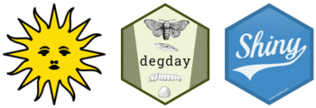

Building a Degree Day Decision Support Tool in R
A Zoom workshop
May 3 & 10, 2024
10:30a -
12:00p Pacific Daylight Time
Preparing for the Workshop
1. Registration
Registration
is required (free). If you haven’t already done so, you may register here.
2. Create a free Posit Cloud
account
We’ll be using Posit
Cloud for the hands-on exercises. Please create a free account if
you don’t already have one. Once you’ve created a Posit Cloud account,
you’re done for now.
Tip: Using a second monitor is strongly recommended for those doing the hands-on exercises, so you can watch the instructor’s screen share on one monitor, while working on RStudio in another. See also these tips for taking Zoom workshops on a single monitor.
3. Review data wrangling methods with tidyverse packages
This workshop will make extensive use
of data wrangling techniques using the tidyverse packages dplyr, tidyr, and lubridate. If you’re not
familiar with these packages, some review would be time well spent. See
these Data Wrangling video tutorials from
RStudio.
Part I. Working with Degree Days
May 3, 2024
Exercise #1: qmd | completed
Notebooks are included in the Posit Cloud project.Homework #1: Predict the first two flights of Navel Orangeworm (qmd file)
Part II. Weather APIs
May 10, 2024
Slides
Exercise
Part III. Building a Shiny App
May 24, 2024
Slides
Exercise